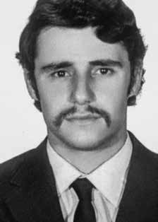

Aylton
Adalberto
Mortati
CIRCUNSTÂNCIAS DA MORTE
Aylton Adalberto Mortati foi visto pela última vez no dia 4 de novembro de 1971, quando foi preso por agentes do DOI-CODI/SP, durante a operação de “estouro” do aparelho situado à Rua Cervantes n° 7, em São Paulo (SP), em circunstâncias ainda não totalmente esclarecidas.
Mortati foi preso junto com José Roberto Arantes de Almeida, também militante da Molipo. Ao longo dos anos de 1970 e 1971, Carmem Sobrinho, mãe de Aylton, viveu sob constante pressão e angústia. De acordo com seu relato: “Minha vida e de minha família passou a ser de constante vigilância e provocação por parte de agentes de segurança, que estacionavam carros à frente de minha residência, subiam no telhado da casa, usavam o banheiro existente no fundo do quintal, revistavam compras de supermercado, censuravam o telefone, espancaram meus sobrinhos menores e, ao que pude deduzir, provocaram um início de incêndio em minha residência/pensionato. Os agentes que vigiavam minha residência e meus passos, por duas vezes atentaram contra minha vida, jogando o carro em minha direção.”
Alguns presos políticos, como Paulo de Tarso Venceslau e José Carlos Gianini, relataram que Aylton foi morto nas dependências do DOI-CODI/SP, quando prestaram depoimento à Justiça Militar na época dos fatos. Na apostila sobre neutralização de aparelhos que elaborou, o comandante do DOI-CODI/SP, major Carlos Alberto Brilhante Ustra, citando o caso da Rua Cervantes, mencionou apenas a morte de José Roberto Arantes de Almeida, e não a de Aylton. Em 1975, presos políticos do presídio Romão Gomes, em São Paulo, encaminharam ao então presidente da Ordem dos Advogados do Brasil (OAB), Caio Mário da Silva Pereira, documento contendo denúncias sobre a morte de Aylton e de outros presos políticos.
No início da década de 1990, com a divulgação do relatório do Ministério da Aeronáutica encaminhado ao ministro da Justiça em 1993, apareceram os primeiros indícios das circunstâncias que culminaram no desaparecimento de Aylton. O relatório informava: “neste órgão consta que foi morto em 4/11/1971, quando foi estourado um aparelho na rua Cervantes, nº 7, em São Paulo. Na ocasião, usava um passaporte, em nome de Eduardo Janot Pacheco”. Conforme consta no “Dossiê Ditadura: Mortos e Desaparecidos Políticos no Brasil”, aproximadamente na mesma época foi localizada, nos arquivos do Departamento de Ordem Política e Social do Estado do Paraná (DOPS/PR), uma gaveta com a identificação “falecidos”, onde constava uma ficha com o nome de Aylton.
Em fevereiro de 2013, a Comissão da Verdade do Estado de São Paulo realizou sua 5º Audiência Pública, na qual prestou depoimento Virgílio Lopes Eney, advogado contratado pela família de Aylton após o seu desaparecimento. Segundo relatou, na ocasião dos fatos ele viu sobre uma mesa na 2ª Auditoria Militar do Exército, em São Paulo (SP), uma certidão de óbito em nome de Aylton Adalberto Mortati. Ao tentar ler o documento, foi preso e levado para o DOI-CODI/SP, onde foi interrogado por agentes que tentaram convencê-lo de que Aylton nunca havia sido preso. Foi localizada uma requisição de exame necroscópico nos arquivos do Instituto MédicoLegal (IML) de São Paulo, onde consta a informação da descoberta de um cadáver nos baixos do viaduto Bresser, datado de 14/11/1971 e assinada por David dos Santos Araújo, delegado de polícia que atuava no DOI-CODI/SP. Acredita-se que o documento possa ser relativo ao cadáver de Mortati.
Suspeita-se que os restos mortais de Aylton estejam no Cemitério Dom Bosco, em Perus, São Paulo. Consta no livro do cemitério registro de sepultamento de um desconhecido que havia sido encontrado no Viaduto Bresser, em 16 de novembro de 1971, data próxima ao desaparecimento de Mortati. Para analisar os restos mortais de Mortati, foram realizados trabalhos periciais que ficaram sob a responsabilidade da Criminalística da Polícia Federal e da “Equipo Argentino de Antropologia Forense” e, entre os anos de 2012 e 2014, foram realizados exames antropológicos e genéticos, na tentativa de identificar os restos mortais de Aylton Adalberto Mortati e de outros militantes políticos com indícios de terem sido sepultados no local.
Exames de DNA das ossadas exumadas que poderiam pertencer a Aylton Mortati foram realizados, porém os resultados foram negativos, uma vez que foi constatada a incompatibilidade com a amostra de DNA coletada, inclusive com o Banco de Perfis. A Comissão Nacional da Verdade localizou documento que indica a intenção de execução de militantes banidos e vindos de Cuba, notadamente de integrantes do Molipo, como o caso de Mortati.
O Ministério Público Federal instaurou procedimento investigatório criminal, em 2011, para apurar as circunstâncias e autorias no sequestro e desaparecimento de Aylton Adalberto Mortati, PIC, 1.34.001.007801/2011-13. Aylton Adalberto Mortati permanece desaparecido.
Aylton Adalberto Mortati was last seen on November 4, 1971, when he was arrested by DOI-CODI/SP agents, during the “bursting” operation of the device located at Rua Cervantes n° 7, in São Paulo (SP), in circumstances that have not yet been fully clarified.
Mortati was arrested along with José Roberto Arantes de Almeida, also a Molipo activist. Throughout the years 1970 and 1971, Carmem Sobrinho, Aylton's mother, lived under constant pressure and anguish. According to his report: "My life and that of my family became one of constant surveillance and provocation by security agents, who parked cars in front of my house, climbed on the roof of the house, used the bathroom in the back of the yard, searched supermarket purchases, censored the telephone, beat my younger nephews and, from what I could deduce, started a fire in my house/pension. The agents who watched my house and my steps, twice made attempts on my life, playing games the car towards me.”
Some political prisoners, such as Paulo de Tarso Venceslau and José Carlos Gianini, reported that Aylton was killed on the premises of DOI-CODI/SP, when they gave a statement to the Military Court at the time of the events. In the booklet on neutralization of devices that he prepared, the commander of DOI-CODI/SP, Major Carlos Alberto Brilhante Ustra, citing the case of Rua Cervantes, only mentioned the death of José Roberto Arantes de Almeida, and not that of Aylton. In 1975, political prisoners from the Romão Gomes prison, in São Paulo, sent to the then president of the Brazilian Bar Association (OAB), Caio Mário da Silva Pereira, a document containing allegations about the death of Aylton and other political prisoners.
At the beginning of the 1990s, with the release of the report from the Ministry of Aeronautics sent to the Minister of Justice in 1993, the first signs of the circumstances that culminated in Aylton's disappearance appeared. The report stated: "this body states that he was killed on 4/11/1971, when a device exploded on Rua Cervantes, nº 7, in São Paulo. At the time, he was using a passport in the name of Eduardo Janot Pacheco." As stated in the “Dictatorship Dossier: Political Deaths and Disappearances in Brazil”, approximately at the same time, a drawer marked “deceased” was found in the archives of the Department of Political and Social Order of the State of Paraná (DOPS/PR), which contained a file with the name of Aylton.
In February 2013, the Truth Commission of the State of São Paulo held its 5th Public Hearing, in which Virgílio Lopes Eney, a lawyer hired by Aylton's family after his disappearance, gave testimony. According to what he reported, at the time of the events he saw on a table at the 2nd Military Audit of the Army, in São Paulo (SP), a death certificate in the name of Aylton Adalberto Mortati. When he tried to read the document, he was arrested and taken to DOI-CODI/SP, where he was interrogated by agents who tried to convince him that Aylton had never been arrested. A request for a necroscopic examination was located in the archives of the Instituto MédicoLegal (IML) of São Paulo, which contains information about the discovery of a corpse at the bottom of the Bresser viaduct, dated 14/11/1971 and signed by David dos Santos Araújo, police chief who worked at DOI-CODI/SP. It is believed that the document may be related to Mortati's corpse.
It is suspected that Aylton's remains are in the Dom Bosco Cemetery, in Perus, São Paulo. The cemetery's book contains a burial record of an unknown person who had been found on the Bresser Viaduct, on November 16, 1971, a date close to Mortati's disappearance. To analyze Mortati's mortal remains, expert work was carried out under the responsibility of the Federal Police Criminalistics and the “Equipo Argentino de Antropologia Forense” and, between 2012 and 2014, anthropological and genetic examinations were carried out, in an attempt to identify the mortal remains of Aylton Adalberto Mortati and other political activists with signs of having been buried in the location.
DNA tests on the exhumed bones that could belong to Aylton Mortati were carried out, but the results were negative, as they were found to be incompatible with the DNA sample collected, including with the Profile Bank. The National Truth Commission located a document indicating the intention to execute banned militants from Cuba, notably members of Molipo, such as the case of Mortati.
The Federal Public Ministry initiated criminal investigative proceedings in 2011 to investigate the circumstances and perpetrators in the kidnapping and disappearance of Aylton Adalberto Mortati, PIC, 1.34.001.007801/2011-13. Aylton Adalberto Mortati remains missing.
Aylton Adalberto Mortati fue visto por última vez el 4 de noviembre de 1971, cuando fue detenido por agentes del DOI-CODI/SP, durante la operación de “explosión” del dispositivo ubicado en la Rua Cervantes n° 7, en São Paulo (SP), en circunstancias que aún no han sido completamente esclarecidas.
Mortati fue detenido junto con José Roberto Arantes de Almeida, también activista de Molipo. A lo largo de los años 1970 y 1971, Carmem Sobrinho, la madre de Aylton, vivió bajo constante presión y angustia. Según su relato: "Mi vida y la de mi familia se convirtió en una vida de constante vigilancia y provocación por parte de agentes de seguridad, que estacionaban autos frente a mi casa, se subían al techo de la casa, usaban el baño en el fondo del patio, registraban las compras del supermercado, censuraban el teléfono, golpeaban a mis sobrinos menores y, por lo que pude deducir, iniciaban un incendio en mi casa/pensión. Los agentes que vigilaban mi casa y mis pasos, atentaron dos veces contra mi vida, jugando con el auto hacia mí".
Algunos presos políticos, como Paulo de Tarso Venceslau y José Carlos Gianini, denunciaron que Aylton fue asesinado en las instalaciones del DOI-CODI/SP, cuando prestaron declaración ante el Tribunal Militar en el momento de los hechos. En el folleto sobre neutralización de dispositivos que preparó, el comandante del DOI-CODI/SP, mayor Carlos Alberto Brilhante Ustra, citando el caso de la Rua Cervantes, sólo mencionó la muerte de José Roberto Arantes de Almeida, y no la de Aylton. En 1975, presos políticos de la prisión Romão Gomes, en São Paulo, enviaron al entonces presidente de la Asociación de Abogados de Brasil (OAB), Caio Mário da Silva Pereira, un documento que contenía denuncias sobre la muerte de Aylton y otros presos políticos.
A principios de los años 90, con la publicación del informe del Ministerio de Aeronáutica enviado al Ministro de Justicia en 1993, aparecieron los primeros indicios de las circunstancias que culminaron con la desaparición de Aylton. El informe señala: "este cuerpo afirma que fue asesinado el 11/04/1971, cuando un artefacto explotó en la Rua Cervantes, nº 7, en São Paulo. En ese momento, portaba un pasaporte a nombre de Eduardo Janot Pacheco". Como consta en el “Dossier Dictadura: Muertes y Desapariciones Políticas en Brasil”, aproximadamente en la misma época, fue encontrado en el archivo del Departamento de Orden Político y Social del Estado de Paraná (DOPS/PR) un cajón marcado como “fallecido”, que contenía un expediente con el nombre de Aylton.
En febrero de 2013, la Comisión de la Verdad del Estado de São Paulo celebró su V Audiencia Pública, en la que rindió testimonio Virgílio Lopes Eney, abogado contratado por la familia de Aylton tras su desaparición. Según relató, en el momento de los hechos vio sobre una mesa de la Segunda Auditoría Militar del Ejército, en São Paulo (SP), un certificado de defunción a nombre de Aylton Adalberto Mortati. Cuando intentó leer el documento, fue detenido y trasladado al DOI-CODI/SP, donde fue interrogado por agentes que intentaron convencerlo de que Aylton nunca había sido detenido. En el archivo del Instituto Médico Legal (IML) de São Paulo fue localizada una solicitud de examen necroscópico, que contiene información sobre el hallazgo de un cadáver en el fondo del viaducto de Bresser, con fecha del 14/11/1971 y firmada por David dos Santos Araújo, jefe de policía que actuaba en el DOI-CODI/SP. Se cree que el documento puede estar relacionado con el cadáver de Mortati.
Se sospecha que los restos de Aylton se encuentran en el cementerio Dom Bosco, en Perus, São Paulo. El libro del cementerio contiene un acta de entierro de una persona desconocida que había sido encontrada en el viaducto de Bresser, el 16 de noviembre de 1971, fecha cercana a la desaparición de Mortati. Para analizar los restos mortales de Mortati se realizaron peritajes a cargo de la Criminalística de la Policía Federal y el Equipo Argentino de Antropología Forense y, entre 2012 y 2014, se realizaron exámenes antropológicos y genéticos, en un intento de identificar los restos mortales de Aylton Adalberto Mortati y otros activistas políticos con signos de haber sido enterrados en el lugar.
Se realizaron pruebas de ADN a los huesos exhumados que podrían pertenecer a Aylton Mortati, pero los resultados fueron negativos, al comprobarse que eran incompatibles con la muestra de ADN recolectada, incluso con el Banco de Perfiles. La Comisión Nacional de la Verdad localizó un documento que indicaba la intención de ejecutar a militantes prohibidos en Cuba, en particular miembros de Molipo, como en el caso de Mortati.
El Ministerio Público Federal inició en 2011 una investigación penal para investigar las circunstancias y autores del secuestro y desaparición de Aylton Adalberto Mortati, PIC, 1.34.001.007801/2011-13. Aylton Adalberto Mortati sigue desaparecido.